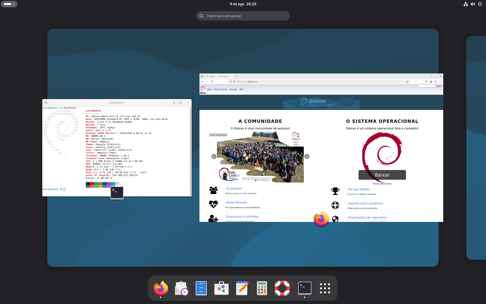
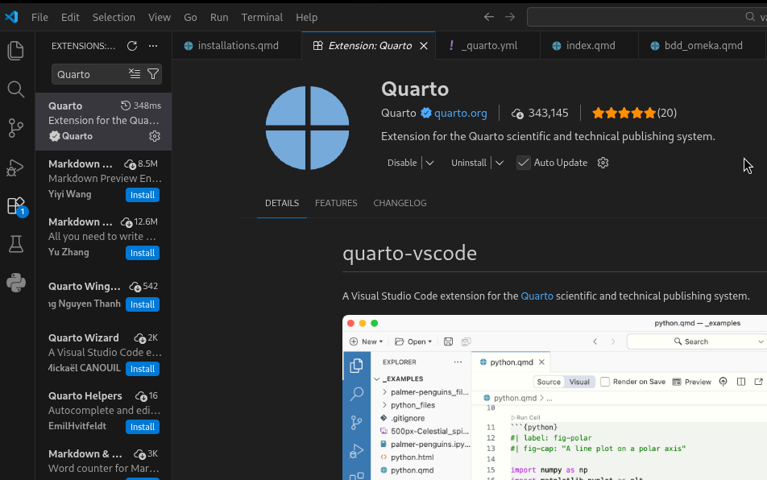

Prérequis et installations
Le maintien opérationel du projet CartoExpert nécessite l’installation d’un poste de travail particulier, avec des paramètres et des contraintes physiques et logicielle à prendre en compte. Cette page de la documentation se focalisera donc sur ces prérequis à effectuer, et sur les installations à effectuer.
Constituer l’écosystème de travail
Le premier point à aborder est la construction d’un poste de travail performant, fiable et confortable pour permettre à l’opérateur un travail fluide et efficace. Nous allons aborder cela en deux temps : le “hardware” et le “software”.
Tout d’abord, le projet CartoExpert mènera l’opérateur à effectuer du multitasking important comme du développement, de la data-gestion de grande ampleur, de l’hébergement de serveur local, etc… Ainsi, un focus tout particuler doit donc être fait sur l’obtention d’une machine suffisamment puissante, offrant une puissance calculatoire supérieure (CPU) ainsi que suffisamment de mémoire vive (RAM). Côté stockage, rien de bien extravagant n’est requis, néanmoins un disque dur externe de 4To a été alloué au projet qu’il convient d’utiliser autant que nécessaire (tout en faisant attention aux problématiques de vol de données que cela peut engendrer).
À côté de ça, notons qu’il est fortement recommandé d’accompagner le PC de deux écrans minimum, afin de faciliter la navigation entre les multiples fenêtres. Également, parallèlement au HDD 4To, une clé USB est recommandé pour plus de flexibilité (installation/réparation d’OS, …).
En terme d’OS, il est fortement recommandé de se tourner vers une distribution Linux intitulée Debian plutôt que vers un environnement Windows car :
Oméka S, l’outil utilisé pour mapper nos données, tourne très mal sur Windows.
Les serveurs de la DSR tournent eux aussi sur une distrio Debian. Avoir un environnement de travail similaire aux serveurs facilitera le transfert de données locales vers les serveurs le moment venu.

Les machines standard de l’Université, fournies par la DSI, ne permettent pas en temps normal d’effectuer de telles manoeuvres comme l’installation d’un OS en dual-boot, ces derniers n’étant fourni avec aucun droit administrateur que ça soit du côté du Windows nativement installé que du côté biOS. Cet obstacle n’est pas à négliger et peut coûter du temps s’il n’est pas suffisamment traité à l’avance.
Bien que Debian possède généralement sa propre interface de bureautique (GNOME) à l’instar d’un environnement Windows standard, l’expérience utilisateur générale reste moins intuitive que sur Windows (utilisation du Terminal, de lignes de codes, …). Ainsi, une aisance dans la navigation des interfaces numériques est recommandée pour plus de fluidité (autrement, la quasi totalité des processus sont très bien documentés en ligne).
L’installation de la distro sur une machine de l’Université peut nécessiter un certain temps, entre l’installation en elle-même en dual-boot (avoir Windows et Linux sur la même machine) et surtout le débloquage de certains verrous par la DSI (droits admin sur Windows, déverrouillage biOS, …). En attendant le débloquage de ces derniers verrous, travailler sur les données peut s’effectuer sur Windows.
Logiciels importants
LibreOffice Calc, préinstallé dans la distro Debian GNOME, utile pour la création et la modification des datasets CSV ;
Visual Studio Code pour écrire plus aisément dans divers types de fichiers (html, qmd, ttl, …) ;
GitHub Desktop pour téléverser certains fichiers sur GitHub, et héberger la documentation sur GitHub Pages. Notez que GitHub Desktop n’existe pas officiellement sur Linux, mais que des portages communautaires très fiables existent et sont trouvable facilement.
L’avantage d’utiliser VSCode, en plus qu’il gère nativement de nombreux langages informatiques, est qu’il est possible d’y attacher de nombreux modules pour peaufiner l’usage de VSCode. Voici quelques modules très utiles
Obligatoire : Quarto (Quarto)
Recommandé : RDF Sketch (Zazuko)
Secondaire : Python (Microsoft)

Configurer le serveur local
Une fois l’environnement de travail installé, à l’intérieur de celui-ci doit être configuré un “serveur local” dans lequel l’opérateur effectuera l’ensemble des modifications sur les données puis de les importer sur le serveur du DSR à travers de mises à jours. Dans notre cas, on utilisera la “plateforme” open-source LAMP (Linux, Apache, MySQL/MariaDB, PHP) pour créer ledit serveur. Revenons à présent sur les différents composants de cet ensemble logiciel, pour y voir plus clair.
Choix a été fait de ne pas expliciter les différentes étapes d’installation de chacune de ces composantes directement sur cette page, mais plutôt de rediriger vers de la documentation disponible en ligne. Par ailleurs, dans le cas où la documentation citée n’est pas suffisante, de nombreuses autres documentations existent facilement sur le web.
Apache HTTP Server
La première pierre de notre environnement préliminaire d’édition est le logiciel open-source Apache. Open-source et utilisé par près de la moitié des sites web du net, Apache va nous permettre de créer notre site internet (localement) et d’y installer notre outil de gestion des données, tout en profitant de la très vaste documentation disponible pour faire fonctionner le serveur.
- https://www.it-connect.fr/installer-un-serveur-lamp-linux-apache-mariadb-php-sous-debian-11/#A_Installer_Apache_sous_Debian_13
- https://www.it-connect.fr/installer-un-serveur-lamp-linux-apache-mariadb-php-sous-debian-11/#B_Lemplacement_de_la_configuration_Apache2
MariaDB: l’équivalent libre de MySQL
La seconde pierre angulaire de notre environnement préliminaire d’édition est le dérivé communautaire et open-source de MySQL : MariaDB. Suite au rachat de Sun Microsystems (MySQL) par Oracle, MariaDB est un système de gestion de bases de données relationnelles (SGBDR) de référence, alliant haute compatibilité avec MySQL, performances optimisées et gouvernance transparente portée par la communauté. C’est sur ce socle éprouvé que reposeront le stockage et la gestion structurée de l’ensemble de nos données éditoriales.
PHP: Hypertext Preprocessor
Enfin, la troisième pierre angulaire de notre environnement préliminaire d’édition est le langage de programmation orienté objet : PHP. Celui-ci permet la création de page web dite dynamiques, c’est-à-dire des pages dont le contenu est généré à la volée par le serveur en fonction des interactions de l’utilisateur, des données stockées ou du contexte de la requête, par opposition aux pages statiques au contenu figé. À titre informatif, Wikipédia ou Facebook reposent sur PHP.
https://www.it-connect.fr/installer-un-serveur-lamp-linux-apache-mariadb-php-sous-debian-11/#C_Installer_PHP_sous_Debian_13
https://tecadmin.net/how-to-install-php-on-debian-13/ (notamment pour certaines extensions)
https://www.php.net/manual/en/mbstring.installation.php
Installer phpMyAdmin Pas vraiment une pierre angulaire dans notre cas, phpMyAdmin est une application web offrant une interface web de gestion pour MariaDB (entre autres) qu’il est malgré tout recommandé d’installer dans notre serveur local.
- https://www.it-connect.fr/installer-phpmyadmin-sur-debian-11-et-apache/
Installer le logiciel Oméka S
Cette troisième partie va maintenant se focaliser sur l’installation et la configuration d’un logiciel de web sémantique essentiel dans le processus de mapping des données : Oméka S.
Cette étape ne peut être faite qu’après avoir correctement effectué l’installation du Serveur LAMP puisque Oméka S a besoin d’un serveur pour fonctionner.
Télécharger Oméka S et l’extraire ici :
>>> var/www/htmlpuis, dans le dossier (renommé), aller dans :
>>> /config/database.inidéfinir un user / mdp / databasename puis “host=localhost”
[image illustration]
Une fois tout cela effectué, vérifions que tout fonctionne en nous connectant, via un navigateur type Firefox, à l’interface locale Oméka S via ce lien :
>>> localhost/[nom_dossier]/adminSi l’interface obtenue est similaire à celle ci-dessus, c’est-à-dire une page de connexion, ça veut dire que l’intallation a été correctement effecutée ! À l’avenir, l’accès à l’interface se fera toujours par l’URL cité précédemment.
Enfin, pour opérer efficacement, nous aurons besoin de “modules”. Ceux-ci permettent l’ajout de fonctionnalités importantes directement dans l’interface Oméka S. Pour obtenir ces modules, téléchargez-les ici puis décompressez-les dans :
>>> var/www/html/[nom_dossier]/modulescoucou
Une fois les modules décompressés dans le fichier, ceux-ci apparaissent sur l’interface Oméka S dans la section “Modules”. Pour chacun d’entre eux, cliquer sur “Installer” pour les rendre opérationnels.